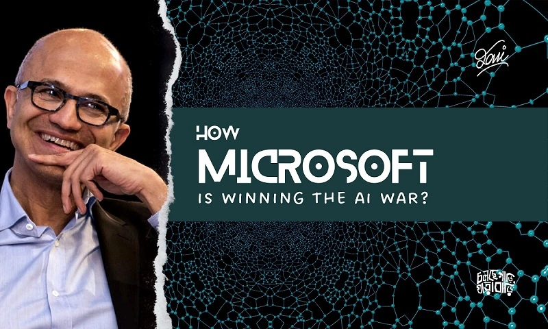

কয়েকমাস ধরে আমরা সবাই যেন আর্টিফিশিয়াল ইন্টেলিজেন্স বা এআই এর সাথে আরেকটু বেশ মিশে গেছি সবাই। ChatGPT, Dall-e, Midjourney-ময় হয়ে গেছে আমাদের সব সোশ্যাল মিডিয়া। বিশেষত ChatGPT আসার পর তো কথাই নেই! ভালো , মজার ও সুন্দর সুন্দর অনেক কাজের পাশাপাশি এসব এআই মডেলগুলো নিয়ে মিম-ও কিন্তু কম বানানো হয়নি! আজকাল প্রায় সবই করা যাচ্ছে এআই দিয়ে! এসাইনমেন্ট লিখা লাগবে? ChatGPT! ছবি আঁকা বা প্রোডাক্ট ডিজাইন করা লাগবে? Midjouney! ভিডিও বানানো লাগবে? Syhthesia! কোড লিখা লাগবে? ChatGPT, Github Co-pilot!

এসব যে মডেলগুলো আমরা দেখছি, ব্যবহার করছি, এগুলো কে বানিয়েছে? হালের জনপ্রিয় ChatGPT, Dall-E, Dall-E 2 ও Vall-E বানিয়েছে OpenAI নামক একটি প্রতিষ্ঠান। কোড লিখার গিটহাব কো-পাইলটের মালিক গিটহাব। Midjourney নিজেই একট প্রতিষ্ঠান, ইউরোপীয় একটি ভেঞ্চার ক্যাপিটারের এতে বিনিয়োগ আছে। OpenAI প্রতিষ্ঠিত হয় ২০১৫ সালে। তখন AI নিয়ে মানুষের মধ্যে এক ধরনের ভয় কাজ করতো, যে তাঁরা দুনিয়ার দখন নিয়ে নিবে কিনা! তাই, হিউম্যান ফ্রেন্ডলি এআই নিয়ে গবেষণা ও কাজের জন্য ৬ ব্যক্তি মিলে ১ বিলিয়ন ডলার দেয়ার প্রতিশ্রুতি দেন, এবং এটি প্রতিষ্ঠা করেন। (মজার বিষয় হচ্ছে, এ ৬ জনের একজন হলেন, ইলন মাস্ক! হ্যা, এই যুগে ইন্টারেস্টিং কিছু হবে আর তার সাথে ইলন মাস্কের নাম জড়াবেনা - এটা সম্ভবত শুনতেই বেমানান লাগে! অবশ্য তিনি ২০১৮ সালে OpenAI Director এর পদ ছাড়েন; তবে, হ্যা, রিসার্চের জন্য দান করা অব্যাহত রাখেন।)
মাইক্রোসফট এলো কোথা থেকে? মাইক্রোসফট আলোচনায় আসে ২০১৮ সালে। ৪-ই জুন এটি প্রোগ্রামারদের জন্য ‘মাস্ট’ টাইপের একটা সাইট - গিটহাব এক্যুয়ার করে সাড়ে ৭ বিলিয়ন ডলারে। গিটহাব হচ্ছে কোড স্টোরিং, শেয়ারিং ও ভার্সন কন্ট্রোল সফটওয়্যার। তারপর ২০১৯ সালে মাইক্রোসফটের সিইও সত্য নাদেলা আবারও আলোচনায় আসেন OpenAI-এ ১ বিলিয়ন ডলার ইনভেস্টের মাধ্যমে।
প্রথমত আসি, গিটহাবের বিষয়ে। গিটহাব ইউজ করেন না, কিন্তু ভালো প্রোগ্রামার - এটা মোটামুটি অবাস্তব জিনিস! বরং গিটহাব প্রোগ্রামারদের জন্য একটা মাস্ট হ্যাভ স্কিল। প্রোগ্রামারদের জাজ করতে হলে, প্রায় সবাই সবার আগে বলেন, “তোমার গিটহারের লিংকটা দাও!” এখানে লাখ-লাখ প্রোগ্রামারের লিখা কোটি-কোটি লাইন কোড আছে। আর এসব ব্যবহার করেই গিটহাব বানিয়েছে গিটহাব কো-পাইলট, AI কোড রাইটার। গিটহাব কো-পাইলট এর কাজ হলো কোড লিখতে মানুষকে সাহায্য করা। বিভিন্ন ব্যাসিক কোড লিখা থেকে শুরু করে বেশ কিছু মজার কাজ ও ইন্টারমিডিয়েট লেভেল আন্ডারস্ট্যান্ডিং দিতে পারে এই কো-পাইলট। অনেক ব্যবহারকারীই এটা নিয়ে বেশ খুশি। তাহলে, মাইক্রোসফটের কাছে এমন এক জিনিস আছে, যেটা কোড লিখতে পারে! OpenAI - Microsoft ডিলের কারণে OpenAI-এর GPT-3 মডেলটি মাইক্রোসফট তাদের বিভিন্ন প্রোডাক্টে ইউজ করতে পারবে। GPT-3 হলো একটা এডভান্সড ন্যাচারাল ল্যাঙ্গুয়েজ প্রসেসিং মডেল, অর্থাৎ এটা টেক্সট-ডাটা নিয়ে ক্লাজ করতে পারে। আমাদের চেনা-পরিচিত ChatGPT-কে বলা হচ্ছে GPT-3.5, যা GPT-3 এর চেয়ে একটু ভালো। এখন এ জিনিস নিয়ে মাইক্রোসফট কি করবে? মাইক্রোসফটের নিজস্ব সার্চ ইঞ্জিন হচ্ছে বিং (Bing), কিন্তু এটা আমরা কেউই ব্যবহার করিনা। কেন করিনা? বাজে জিনিস, ভালো রেজাল্ট আসেনা, তাই! এর চেয়ে গুগল ক্রোম অনেক ভালো আর ফ্রি! এখন মাইক্রোসফট GPT-3, ChatGPT-এর মতো মডেলগুলো কাজে লাগাবে বিং এ, যাতে এটা আরো ভালো পারফর্ম করে, ক্রোমের চেয়েও আরো বেটার রেজাল্ট দেয়। চ্যাটজিপিটি-ত (!) কারণে অনেকেই গুগল সার্চের দুর্দিন দেখছেন, কেননা, এটি গুগলের চেয়েও ভালো সার্চ রেজাল্ট দিতে পারে! আর এরকম ChatGPT পাওয়ারড স্মার্ট সার্চ ইঞ্জিন কে না চায়? পাশাপাশি, মাইক্রোসফটের খুব জনপ্রিয় প্রোডাক্ট হচ্ছে মাইক্রোসফট অফিস। এখন MS Office-এ যদি ChatGPT থাকে? এক্সেলের সূত্র লিখার দিন শেষ! স্লাইডও হয়তো ডিজাইন করে দিতে পারবে, আউটলুক হয়তো নিজেই মেইল লিখে পাঠিয়ে দিবে! এটাই চায় মাইক্রোসফট! তারপর আসে Dall-E। Dall-e, Dall-E 2 হচ্ছে ইমেজ জেনারেশন মডেল। কাল্পনিক ইমেজ, যে ইমেজ কখনো কেউ আকেনি, হয়ও আকবেওনা, এমন ছবি আকে Dall-e। Midjourney-র বড়বোন বলা যায়! মাইক্রোসফট কি করতে চায়? Dall-e দিয়ে Bing Image Creator বানাতে চায়। যাতে নেটে এইরকম ছবি না থাকলেও আমরা সার্চ দিয়ে মনমতো ইমেজ পেতে পারি! নিজেরা নিজেদের ইচ্ছামত ইমেজ বানাতে পারি! তারপর আরো আছে Vall-e, যার কাজ হচ্ছে অবিকল মানুষের মত ভয়েস জেনারেট করা। মার্টিন লুথার কিং এসে যদি ক্লাবের সেমিনারে বক্তব্য দিতো, কেমন হতো? এসব করতে পারবে Vall-e! মাইক্রোসফটের গেমিং প্লাটফর্ম আছে আমরা জানি - XBox, সেখানেও নতুন নতুন মজার মজার গেম তৈরি করতে পারে তারা এসব মডেল দিয়ে! পাশাপাশি, মাইক্রোসফটের ক্লাউড সেবা Azure - এও আসছে ChatGPT। ফলে এন্টারপ্রাইজ লেভেলে সব কোম্পানি ChatGPT ইউজ করতে পারবে। কাস্টমার সার্ভিসে মেসেজ দিলে chatGPT আমাদেরকে সব বুঝায়া দিবে, অভিযোগ নিবে, সলিউশন দিবে!
তাহলে, কোড লিখা, লিখালিখি, কথা বলা, ছবি বানানো - ৪টা কাজেরই বর্তমানে সেরা মডেলগুলো আছে মাইক্রোসফটের হাতে! এবং, এগুলো তাদের বিভিন্ন প্রোডাক্টে কীভাবে ব্যবহার করা যায় এটা নিয়ে তাঁরা কাজ করে যাচ্ছে; কিছু কিছু জিনিস চালু-ও করে ফেলেছে! যেখানে এরকম একটা স্টেট অব দি আর্ট মডেল থাকাই অনেক বড় কিছু, সেখানে ৪টি সেক্টরের সেরা মডেলগুলো দিয়ে চাইলে কিন্তু মাইক্রোসফট নিজেদের প্রোডাক্টগুলো রেভ্যুল্যুশনালাইজড করে ফেলতে পারে; দুনিয়া উল্টায়া দিতে পারে! এখন পর্যন্ত তাই এআই-এর যুদ্ধে মাইক্রোসফট অন্য সবার চেয়ে কয়েক কদম সামনে আছে!
৪-টা স্টেট অব দি আর্ট মডেল নিয়েই কিন্তু থেমে নেই মাইক্রোসফট। তারা চাচ্ছে OpenAI-এ আরো ১০ বিলিয়ন ডলার ইনভেস্ট করতে, ৪৯% শেয়ার নিতে! এখন OpenAIএর মার্কেট ভ্যালু ১৭ বিলিয়ন ডলারের মতো, তবে সামনের কয়েক বছরেই এটা বর্তমানের ৫-৬ গুণ হয়ে যাবে বলে ধারণা সবারই। আবার, OpenAI-এ বছরেই GPT-4 রিলিজের প্ল্যান করছে। ChatGPT মডেলে মোট প্যারামিটার ছিলো ১৭৫ মিলিয়ন; আর GPT-4-এ গিয়ে এতে ১ বিলিয়নের মতো প্যারামিটার রাখার প্ল্যান করা হচ্ছে! অন্যান্য মডেলগুলোতেও এর পরিমাণ হু-হু করে বাড়বে। (একটা মজার ফ্যাক্ট: ChatGPT মডেল ট্রেইন করতে প্রায় ৯৩৬ মেগাওয়াট বিদ্যুৎ লেগেছিলো, যা দিয়ে প্রায় ১ লাখ ঘরে একদিন কারেন্ট দেয়া যেতো! একই কাজ করতে আমাদের ব্রেনের কত লাগতো? মাত্র ৪০ ওয়াট! আমরা মানুষরা অনেএএএক ইফিশিয়েন্ট! একটা প্রশ্ন, ১ বিলিয়ন প্যারামিটারের GPT-4 এ কত ওয়াট বিদ্যুৎ লাগতে পারে?) মাইক্রোসফট সুপারকম্পিউটার বানাচ্ছে এসব জটিল মডেল নিয়ে কাজ করার জন্য, পাশাপাশি পাইটর্চের (পাইথন মেশিন লার্নিং লাইব্রেরি) বিভিন্ন মডিউলগুলো ইম্প্রুভ করছে আরো ইফিশিয়েন্টলি কাজ করার জন্য।
গুগল অনেক আগে থেকেই এসব নিয়ে কাজ করছে। ২০১৪ সালেই তারা DeepMind এক্যুয়ার করে। DeepMind জেনারেল পারপাস মেশিন লার্নিং মডেল নিয়ে কাজ করে, যেটা সহজেই অনেক লোক ব্যবহার করতে পারবে। DeepMind Google Assistant তৈরিতে বড় ভূমিকা রেখেছিলো, যা Amazon Alexa-এর প্রতিদ্বন্দ্বী। ২০১৫ সালে গুগল Kaggle কিনে নেয়। এটা হচ্ছে বশ্বের সবচেয়ে বড় ডেটা সায়েন্স ও মেশিন লার্নিং কমিউনিটি ও কম্পিটিশন সাইট। গুগল এখানে সারাবছর নানারকম কম্পিটিশনের আয়োসজন করে। সম্প্রতি কোড ইন্টারপ্রেটিং নিয়ে আড়াই লাখ ডলার প্রাইজমানির একটা কম্পিটিশন হয়েছে! কয়েকদিন আগে গুগল তাদের নতুন মডেল Pathways এর ঘোষণা দিয়েছে, যা ৫৪০ মিলিয়ন প্যারামিটারের! কনভার্সেশনাল ও ইন্টারপ্রেটিং এআই হিসেবে তারা কাজ করছে - ল্যাম্বডা দিয়ে। এটা নিয়ে ২০২২ সালে বেশ কন্ট্রোভার্সি হয়েছিল যে, এটা মানুষের মতো ইমোশনালি সেন্টিমেন্টাল বিহেভ করতে পারে! তারপর ইমেজ জেনারেশনের জন্য আছে, Imagen, Dreambooth। আরো বেশকিছু ভালো মডেল ও প্রোডাক্ট আছে গুগলের (যেমন, গুগল ট্রান্সলেটর, স্পিচ টু টেক্সট মডেল ইত্যাদি)। তবে গুগল যেহেতু সব পাবলিকলি শেয়ার করেনা ব্যবহারের জন্য, তাই এ নিয়ে ধারণা একটু কম সবার। তবে চমক এসে পড়তে পারে যেকোনো মুহূর্তেই!
সবশেষে দেখা যাচ্ছে, খুব সহজেই ChatGPT, GPT-3, Dall-e, Vall-e ও Github Copilot - সবগুলো স্টেট অব দ্য় আর্ট মডেল নিয়ে এআই টেকনোলজির যুদ্ধে সবচেয়ে এগিয়ে আছে মাইক্রোসফট। সত্য নাদেলার দুটো গ্রাউন্ডব্রেকিং ডিল মাইক্রোসফটকে খুব সহজেই একটা ভালো অবস্থানে নিয়ে গেছে; যেটা গুগল নিজেরা করতে গিয়ে হয়তো কিছুটা পিছিয়ে পড়েছে। তবে, সুন্দর পিচাই-ও থেমে থাকার মানুষ না! তাই সব মিলিয়ে ২০২৩ সালটা খুব ইন্টারেস্টিং হতে যাচ্ছে AI Enthusiast-দের জন্য!
এআই মডেলগুলো ঘুরে দেখার জন্য >>
১। ChatGPT : https://chat.openai.com/chat
২। Dall-e : https://openai.com/dall-e-2/ (Discord লাগবে)
৩। Google AI Experiments : https://experiments.withgoogle.com/collection/ai
৪। Midjourney : https://www.midjourney.com/app/ (Discord লাগবে)
৫। Synthesia : https://www.synthesia.io/
লেখাটি ট্যকিয়নে আগে প্রকাশিত হয়েছে!
লিখায় - Azmine Toushik Wasi ML Researcher, Kaggle Grandmaster
Copyright © 2025 Azmine Toushik Wasi. All rights reserved.